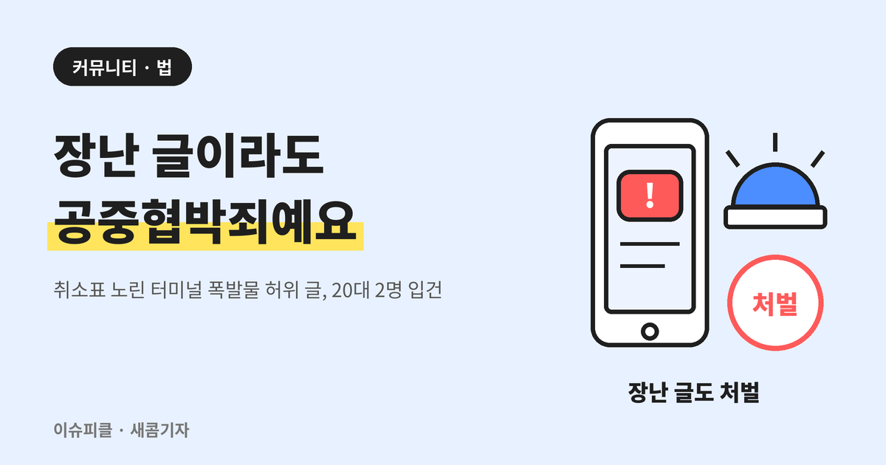
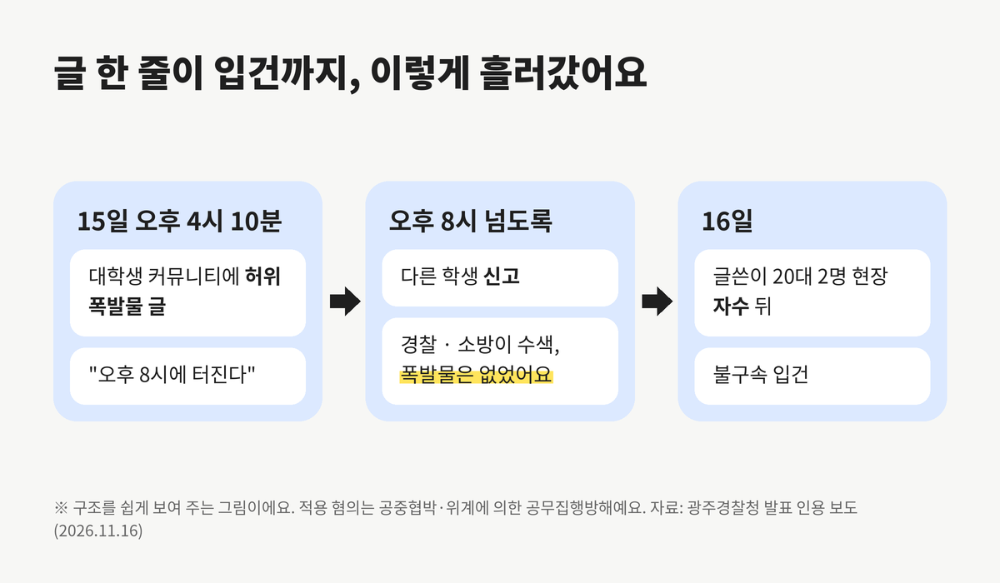
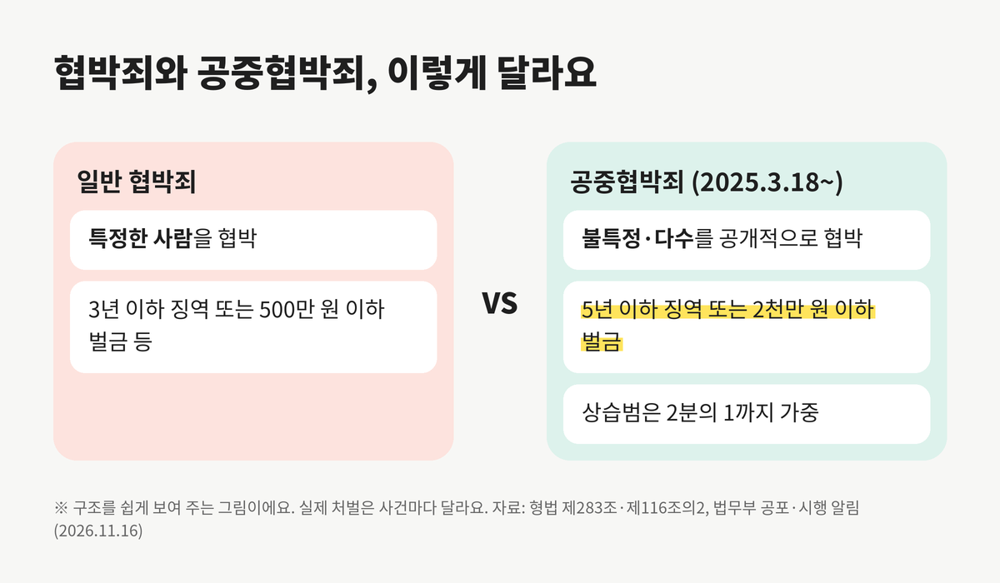
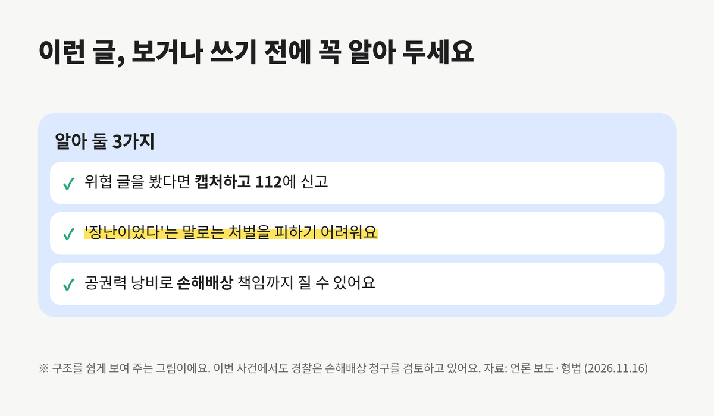

무슨 일이야?

커뮤니티에 올린 글 한 줄 때문에 경찰과 소방이 터미널을 수색하는 일이 벌어졌어요. 글을 쓴 사람들은 결국 자수해 수사를 받고 있어요.
15일 오후 4시 10분쯤 재학생 인증을 거쳐야 가입할 수 있는 대학생 커뮤니티에 "터미널에 설치한 폭발물이 오후 8시에 터진다"는 글이 올라왔어요. 다른 학생의 신고로 경찰·소방이 오후 8시가 넘도록 수색했지만 폭발물은 없었어요. 글을 쓴 20대 대학생 2명은 수색 장면을 보고 자수했고, 경찰은 16일 이들을 불구속 입건했어요.

2025년 3월 18일부터 시행된 형법 제116조의2예요. 불특정 또는 다수 사람의 생명·신체에 해를 끼치겠다고 공개적으로 협박하면 5년 이하 징역 또는 2천만 원 이하 벌금에 처해요. 예전엔 피해자가 특정되지 않으면 협박죄로 처벌하기 어려웠는데, 그 빈틈을 메운 조항이에요. 상습범은 형의 2분의 1까지 더 무겁게 처벌해요.

왜 화제야?
이들은 표를 못 구하자 폭발물 글을 올리면 다른 승객들이 표를 취소할 것 같았다는 취지로 경찰에 진술했어요. 사소한 동기에 비해 경찰과 소방이 크게 움직여 황당하다는 반응이 나왔어요. 경찰은 공중협박과 위계에 의한 공무집행방해 혐의를 적용했어요.
법률가들은 글의 내용과 올린 경위, 그 글을 본 사람들이 위협으로 받아들일 상황이었는지가 중요하다고 설명해요. '장난이었다'는 사정만으로 처벌을 피하기는 어렵다는 거예요. 경찰은 이번 사건에서 공권력 낭비에 대한 손해배상 청구도 검토하고 있어요.
앞으로 볼 점
위협 글을 봤다면 화면을 캡처해 두고 112에 바로 신고하세요. 이번에도 다른 학생의 신고로 수색이 빨리 시작됐어요. 장난 삼아 '폭파'나 '죽이겠다' 같은 글을 올리면 실제 행동이 없어도 형사처벌과 손해배상 책임을 함께 질 수 있어요. 못된 장난으로 업무를 방해하는 경우엔 경범죄처벌법으로 벌금을 받을 수도 있어요.

새콤기자 · 긴 기사도 새콤하게 세 줄로 🥒
아래 근거 기사를 바탕으로 정리했어요.